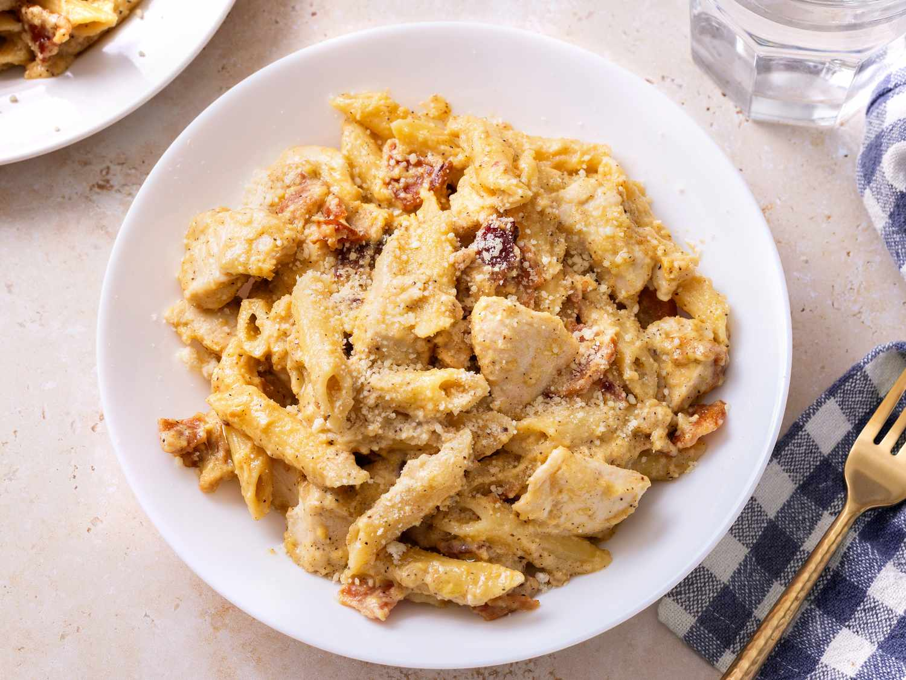

Four Cheese Chicken Carbonara

Chicken carbonara was my go-to meal for surviving at university.
Ingredients
- 1 (16 ounce) package thick-cut bacon
- 1 (16 ounce) package penne pasta
- ⅓ cup olive oil
- ¼ cup butter
- 3 tablespoons minced garlic
- 3 teaspoons ground black pepper, divided
- 3 skinless, boneless chicken breasts, sliced
- 2 cups heavy whipping cream
- 1 cup grated Parmesan-Romano cheese blend
- 1 cup shredded Colby Jack cheese blend
- 3 eggs, beaten
Steps
- Gather all ingredients.
- Place bacon in a large skillet and cook over medium-high heat, turning occasionally, until evenly browned, about 10 minutes.
- Drain bacon slices on paper towels. Chop into small pieces when cool enough to handle.
- Bring a large pot of lightly salted water to a boil. Add penne and olive oil; cook, stirring occasionally, until tender yet firm to the bite, about 8 minutes.
- While pasta is cooking, melt butter in a large, deep skillet over low heat. Add chopped bacon, garlic, and 1 teaspoon pepper; sauté until fragrant, 2 to 3 minutes.
- Increase heat to medium, add chicken, and cook until chicken is no longer pink in the center and the juices run clear, 5 to 7 minutes.
- Add whipping cream, Parmesan-Romano cheese, and remaining 2 teaspoons pepper to the skillet. Stir and cook until heated through, about 3 minutes. Add Colby-Jack cheese and stir until melted. Stir in beaten eggs and bring to a simmer.
- Add drained pasta and stir until coated with sauce.
Back to Index